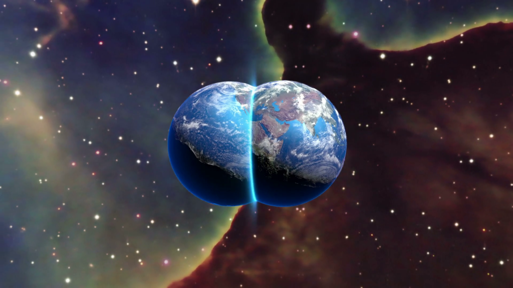

¿Que son los universos paralelos?
La idea de los universos paralelos no es una simple metáfora: se trata de una de las muchas consecuencias que se siguen de las observaciones cosmológicas.
El espacio parece tener un tamaño infinito. En tal caso, todo lo que sea posible encontrará alguna parte donde se convierta en real, por improbable que resulte.
Lo anterior obedece a ideas físicas bastante consolidadas. Si consideramos teorías menos firmes, concluimos que otros universos pueden tener leyes de la física diferentes.
La presencia de tales universos explicaría varios aspectos del nuestro y podría resolver cuestiones fundamentales acerca de la naturaleza del tiempo y la inteligibilidad del mundo físico.

La idea de tal alter ego puede parecer extraña e inverosímil, pero tal vez tengamos que acostumbrarnos a ella, ya que la avalan las observaciones astronómicas. El más conocido de los modelos cosmológicos actuales predice que usted tiene un gemelo en una galaxia que se encuentra a una distancia de alrededor de 10 elevado a 1028 metros de aquí. Esa distancia es tan grande que excede lo astronómico, pero eso no hace que su doble sea menos real. Esa estimación se deduce de nociones de probabilidad elemental, y ni siquiera utiliza física moderna especulativa, sino tan solo que el tamaño del espacio es infinito (o al menos lo bastante grande) y que está casi uniformemente lleno de materia, tal y como indican las observaciones. En un espacio infinito, incluso los hechos más improbables tienen lugar en algún sitio. Existen infinitos planetas habitados, incluyendo no solo uno, sino infinitos, que contienen gente con el mismo aspecto, nombre y recuerdos que usted, y que ejecutan cualquier permutación posible de las decisiones vitales que usted haya tomado.

Lo más que probable es que no vea nunca a sus otros yos. No cabe observar más allá de la distancia que la luz haya podido recorrer durante los 14.000 millones de años transcurridos desde que el universo empezara a expandirse. Los objetos visibles más distantes están ahora a unos 4×1026 metros: una distancia que define nuestro universo observable, también llamado volumen de Hubble, volumen de horizonte o, simplemente, nuestro universo. Los universos de sus otros yos son esferas del mismo tamaño, centradas en sus respectivos planetas. Este es el ejemplo más directo de universos paralelos. Cada universo constituye solo una pequeña parte de un «multiverso» mayor.